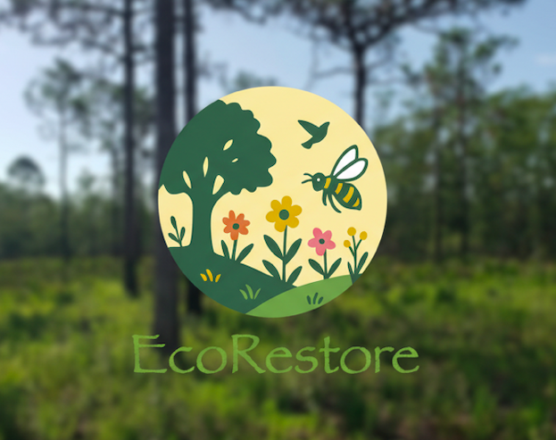

About EcoRestore
EcoRestore is a nonprofit initiative and technology platform dedicated to restoring Florida’s landscapes
to native ecosystems. We connect people, science, and technology to make ecological restoration accessible,
engaging, and impactful for all.

What We're Building
- Plant identification & native replacement guidance
- Restoration journal & best management practices
- Mapping tools for small yards to large parcels
- Community hub for nurseries and restoration services
- Future: Drone-enabled aerial monitoring

Partnerships
EcoRestore collaborates with University of Florida (CALS, CISE, Warrington College of Business)
and is actively engaging with local nurseries. We also work toward integration with FANN’s statewide nursery
network and FNPS chapters across Florida.